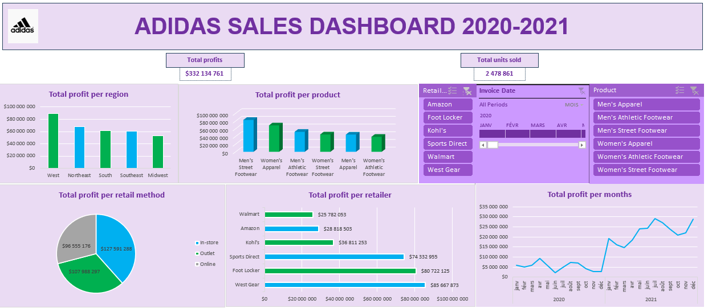

This end-to-end project consists in analysing an excel of the adidas sales across the US from 2020 to 2021. We are going to use python to analyse the key indicators that impact the sales, then we are going to
use excel in order to create an interactive dashboard to visualise those sales data.
Data gathering, cleaning and analysis with python
First, I gathered some data thanks to a kaggle dataset about adidas sales.
Then I cleaned everything thanks to the pandas library and I analysed the data to find some attributes impacting the most the sales and the products units sold. This step is detailed on this commented code
available on my Github: The code.
Creation of the excel dashboard
I created an excel dashboard to summarize the sales data. On the filter we can select the product type, the retailer, and the period to get some specific sales statistics.
At the bottom of the dashboard, we can select the product type and the retailer in order to visualise on the map the total profit per state.
The interactive excel is available here: The excel.